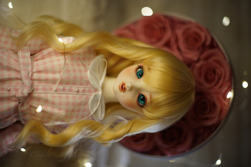

lots of pictures of my love to celebrate!

I took this next one in January but I think I like the one I just took better. I did the wild thing where you take a paintbrush to your $1k doll today and gave her smile marks. it was terrifying and i couldnt stop shaking but i think it worked out okay. im so happy to see her smile :3
Valentine's day is also.... Frederica's birthday! I took another photo of Ryan's figure this year.
I also gave Karen some time in the spotlight. I though her look was perfect for a Valentine's Day shot. She's quite a bit shinier than Freddy of course, but prize figure quality really has come up over the last 5 years. She's definitely not the same quality as a scale but they did a lot better of a job sculpting than they used to.
it's been so lovely outside! a break from snow is very welcome imo. ryan and I got to take a walk on saturday where we hit both thrift stores and the used book store!
looks antique but the bottom is so "well seasoned". I scraped it off but only found "No.5 8 1/2 in." Who knows which brand that is. I'm always looking at cast irons with smooth interiors.
I've been wanting this book for months at the book store but it was $6 and the binding was completely destroyed. I just couldn't justify spending money on a trash book even if there were pictures of Mana-sama inside. I went up to the employee and tried to politely ask for a discount because of the binding, and she told me "We don't sell junk books. You can just take it." I'll see if it's any good before I try to fix the binding.
idk why ryan wanted this because i never got them to fit over my books.
hopefully i can carefully mark some fabric with this. warn me now if thats a bad idea
it's so cute ;_; i wish i had a grandma to send it to. i wanted to send it to my mom instead but ryan says that will just give her a heart attack
never heard of it.
someone liked this enough to stitch their name tag into it
Thrift store lady thought this was worthless and said it cost 10 cents but then forgot to charge me and didn't care to fix it when I asked if she remembered.
hoping I can get this to hold up my hina dress form.